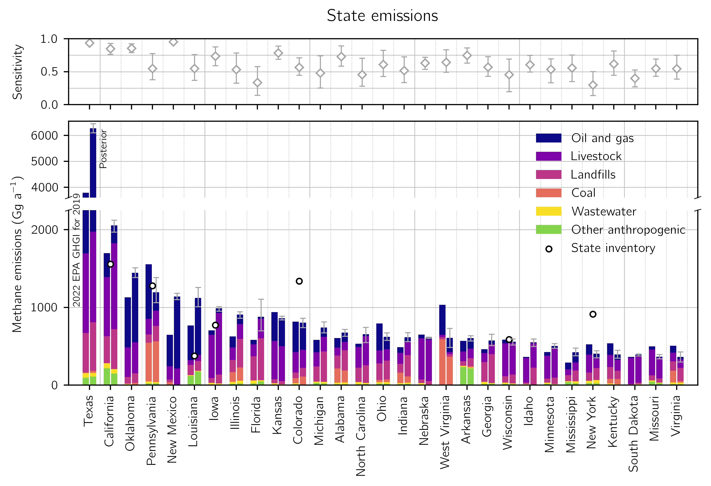

Quantifying methane emissions at high resolution across North America
The TROPOspheric Monitoring Instrument (TROPOMI) aboard Sentinel-5 Precursor provides daily, global observations of atmospheric methane columns at 7 × 5.5 km2 pixel resolution. We use this data to quantify both emissions and the information content of the observations at 0.25° × 0.3125° resolution over North America for 2019. A gridded version of the U.S. Environmental Protection Agency (EPA) Greenhouse Gas Emissions Inventory (GHGI) serves as the basis for the prior estimate for the inversion. We achieve high resolution with a reduced-rank characterization of the observing system that optimally preserves information content.2 Our optimal (posterior) estimate of anthropogenic emissions in CONUS is 30.9 (30.0 - 31.8) Tg a-1, where the values in parentheses give the spread of an inversion ensemble. This is a 13% increase from the 2023 GHGI estimate for CONUS in 2019. The largest increase relative to the GHGI occurs for landfills (51%), with smaller increases for oil and gas (12%) and livestock (11%). These three sectors are responsible for 89% of posterior anthropogenic emissions in CONUS. We exploit the high resolution of our inversion.
- We quantify emissions from 73 individual landfills, where we find emissions are on median 77% larger than the values reported to the EPA’s Greenhouse Gas Reporting Program (GHGRP), a key data source for the GHGI. We attribute this underestimate to overestimated recovery efficiencies at landfill gas facilities and to under-accounting of site-specific operational changes and leaks.
- We quantify emissions for the 48 individual states in CONUS, which we compare to the GHGI’s new state-level inventories and to independent state-produced inventories. Our posterior emissions are on average 34% larger than the 2022 GHGI in the largest 10 methane-producing states, with the biggest upward adjustments in states with large oil and gas emissions, including Texas, New Mexico, Louisiana, and Oklahoma.
- We calculate emissions for 95 geographically diverse urban areas in CONUS. Emissions for these urban areas total 6.0 (5.4 - 6.7) Tg a-1 and are on average 39 (27 - 52) % larger than a gridded version of the 2023 GHGI, which we attribute to underestimated landfill and gas distribution emissions.
These results demonstrate a framework through which satellite observations can be used to improve national, state, and urban methane emission reporting.

Citation
Nesser, H., D.J. Jacob, J.D. Maasakkers, A. Lorente, Z. Chen, X. Lu, L. Shen, Z. Qu, M.P. Sulprizio, M. Winter, S. Ma, A. A. Bloom, J.R. Worden, R.N. Stavins, C.A. Randles, High-resolution U.S. methane emissions inferred from an inversion of 2019 TROPOMI satellite data: contributions from individual states, urban areas, and landfills, Atmos. Chem. Phys. Discuss. [preprint], https://doi.org/10.5194/egusphere-2023-946, in review, 2023. [Link]